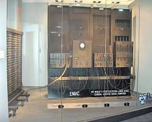
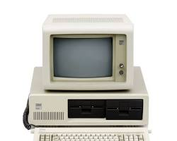

Introduction

The ENIAC, one of the first general-purpose electronic computers.
The transformation of American society through computers and digital technology is one of the most important stories of the modern era. From early ideas about networked computing to the creation of the global internet, digital systems reshaped communication, education, politics, and daily life. This website explores how digital technology sparked a revolution, how people and governments reacted to opportunities and challenges, and how reforms were enacted to guide technology's growth. The narrative draws on primary documents such as government archives and executive orders, and secondary analyses from historians, journalists, and technology scholars.
The NHD Theme
This project argues that the digital revolution, met with both public enthusiasm and institutional caution, ultimately necessitated and was shaped by a series of critical federal reforms that secured systems, managed procurement, and democratized access. Computers sparked a revolution by changing communication, business, education, and government. People and institutions reacted with excitement, fear, and confusion as technology changed rapidly. Eventually, the government passed reforms such as the Computer Security Act and the Telecommunications Act to manage new challenges and opportunities. This website examines all three stages in detail.
Revolution
Origins of the Internet and ARPANET
A logical map of the ARPANET system, the precursor to the internet.
The roots of the digital revolution reach back to the visionary ideas of early pioneers like J.C.R. Licklider, who imagined a globally interconnected set of computers long before the technology existed. ARPANET—the first practical packet-switched computer network—was built in the late 1960s and became the basis for modern internet architecture. On October 29, 1969, Dr. Leonard Kleinrock and his colleagues sent the first message over ARPANET. Kleinrock later described how the first transmitted characters were only "lo" before the system crashed, but that minor glitch signaled the beginning of a new era. This breakthrough demonstrated that machines could communicate over distance, fundamentally altering the role of computers from isolated calculators to networked tools.
Personal Computers and Global Impact

The IBM PC 5150, which helped bring computing into the home.
Parallel to the development of networks, a hardware revolution was democratizing computing power. Computers evolved from room-sized machines to personal devices, driven by foundational innovations like the microprocessor. The Intel 4004 chip, co-inventor Stan Mazor noted, took years for engineers to understand, but it ultimately reformed everything from personal computers to advanced medical systems. The 1981 IBM PC was a pivotal reform in business strategy, as IBM broke tradition by selling through retail stores and using open architecture, which created a booming market for both hardware and software clones. This shift made computers a "pivotal tool" for businesses and homes. The revolution reached its mobile zenith in 2007 when Apple introduced the iPhone, integrating a phone, iPod, and internet communicator into one multi-touch device. This reform of the phone itself forced the entire industry to accelerate, reshaping global communication and creating the app-based economy we know today.
Reaction
Institutional Reactions and Security Concerns
The rise of digital data led to new concerns regarding online privacy and security.
The rapid spread of digital technology triggered significant reactions. As networks expanded, early adopters worried about privacy and security. Dr. Kleinrock recorded that some early computer sites refused to allow any traffic from the network to use their hosts, revealing a fundamental worry about the new technology. As computers became more central to infrastructure, governments and organizations grew concerned about unauthorized access, data breaches, and system vulnerabilities, necessitating structured responses to secure sensitive data.
Societal and Economic Reactions
President Clinton and Vice President Gore Participate in NetDay April 19, 1997.
Public reaction to the digital revolution was a mix of enthusiastic adoption and concerned caution. In education, there was a urgent push to bridge the "digital divide." Grassroots movements like NetDay 1996 saw thousands of community volunteers react by physically wiring their local schools for internet access, an effort championed by President Clinton. This reflected a societal consensus that technology access was crucial for future success. Conversely, the new connectivity spawned novel threats. Cybercrime—including ransomware, phishing, and fraud—emerged, causing significant economic damage and prompting the creation of new government roles and specialized units, like those in Homeland Security Investigations (HSI), to react to these digital-age crimes. The market also reacted swiftly; the first SMS text message in 1992 was a simple technical test, but as society reformed its communication habits, texting spawned a multi-billion dollar industry by the early 2000s.
Reform
Legislative and Policy Reforms
As the federal government became dependent on computers, systemic vulnerabilities demanded legislative reform. The Computer Security Act of 1987 was a direct reaction to security flaws. Congress declared that "improving the security and privacy of sensitive information in Federal computer systems is in the public interest". The law designated the National Bureau of Standards to create security standards and mandated training for federal employees, marking a foundational reform to secure digitized data. By the mid-1990s, the government's outdated approach to buying and managing technology was causing expensive failures. In reaction, the Clinger-Cohen Act of 1996 reformed procurement, requiring agencies to appoint Chief Information Officers (CIOs) and tie IT investments to measurable performance improvements, fundamentally changing how the government managed its technological transformation.
Reforms for Innovation and Access
President Bill Clinton signing the Telecommunications Act of 1996.
Beyond securing systems, government reforms actively aimed to spur innovation and ensure equitable access. The High-Performance Computing Act of 1991 funded supercomputers and the nascent NSFNET, a key reform that accelerated the development of the public internet backbone. The most sweeping reform was the Telecommunications Act of 1996, which aimed to lower prices and increase competition. A cornerstone of this act was the E-Rate program, which provided billions in discounts to connect schools and libraries to the internet—a monumental reform to close the digital divide in education. Complementing this, Executive Order 12999 (1996) made it easier for schools to receive surplus federal computers, directly putting technology into classrooms. The order stated its purpose was to "ensure that American children have the skills they need to succeed in the information-intensive 21st century" by making modern computer technology an integral part of every classroom. Together, these reforms shaped the landscape of the digital age, guiding the revolution toward broader public benefit.
Bibliography
Primary Sources
Congress. "H.R.145 - 100th Congress (1987-1988): Computer Security Act of 1987." Congress.gov, 2019.
CERN. "A Short History of the Web." Home.cern, CERN, 2019.
Apple Inc. "Apple Reinvents the Phone with IPhone." Apple Newsroom, 9 Jan. 2007.
Kleinrock, Leonard. "The First Message Transmission." Www.icann.org, 29 Oct. 2019.
U.S. Immigration and Customs Enforcement. "Cybercrime." ICE, 2025.
"Technology Access and Innovation." Clintonwhitehouse4.Archives.gov.
"Radio Address for NetDay." Archives.gov, 2026.
"Executive Order 12999." Archives.gov, 2024.
"Technology Access and Innovation (Collection)." Clintonwhitehouse4.Archives.gov.
"Telecommunications Act Summary." Clintonwhitehouse4.Archives.gov.
U.S. Congress. "Computer Security Act of 1987, Public Law 100-235." 1988.
President William J. Clinton. "Executive Order 12999—Educational Technology: Ensuring Opportunity for All Children in the Next Century." April 17, 1996.
United States Code. "Title 40, Subtitle III - Information Technology Management (Clinger-Cohen Act)."
Secondary Sources
"How Has Technology Changed Education?" Purdue University College of Education, 2024.
History.com Editors. "Invention of the PC." HISTORY, 11 May 2011.
"The Chip That Changed the World." Newsroom, 17 Dec. 2024.
History.com Editors. "First SMS Text Message Is Sent." HISTORY, 4 Oct. 2022.
IBM. "The IBM PC." IBM, 2024.
Tripwire. "A Look at the Computer Security Act of 1987." 1 Dec. 2020.
Digital Policy Guide. "Clinger-Cohen Act of 1996." 12 May 2025.
Gregersen, Erik. "Leonard Kleinrock." Encyclopedia Britannica, 2012.
Vartabedian, Ralph. "U.S. Mounts High-Stakes Computer Reform Effort." LA Times, 1996.
Internet Society. "Brief History of the Internet." 1997.